Instalar o Ubuntu Server
O instalador do Ubuntu Server 24.04 do princípio ao fim: idioma e teclado, rede, discos com LVM (e o espaço todo para o sistema), utilizador, servidor SSH, a instalação, o primeiro arranque e as primeiras tarefas de um servidor novo.
Com a imagem do Ubuntu Server confirmada, arrancamos o servidor por ela e instalamos o sistema. Aqui é uma máquina virtual, mas os ecrãs são exatamente os mesmos de um servidor físico arrancado por uma pen.
Primeiros ecrãs
O servidor arrancou pela imagem e carregou o instalador. Daqui em diante, tudo se faz com o teclado: as setas para escolher, o Enter para confirmar.
Primeiro, o idioma do instalador. Ficamos com o inglês: é o que aparece em qualquer guia e nas mensagens de erro que se procuram na internet. A língua não muda nada do que o servidor faz.
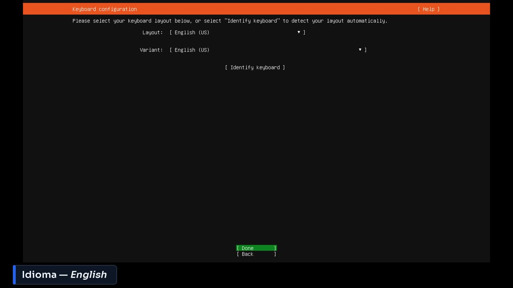
Idioma — English.
O teclado, esse sim, tem de ser o nosso: abrimos a lista, escolhemos Portuguese, e confirmamos.
É importante: com o teclado errado, os símbolos das palavras-passe saem trocados, e depois não se consegue entrar.
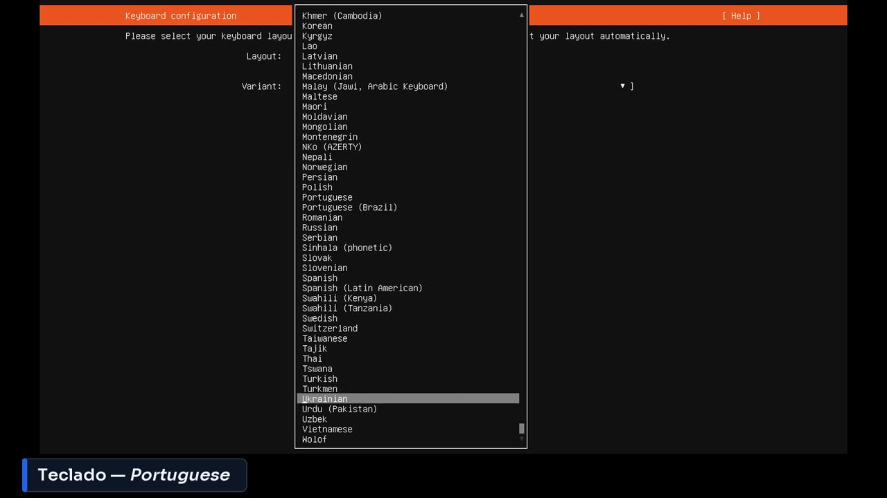
Teclado — Portuguese.
O tipo de instalação: o Ubuntu Server normal, que já vem marcado. A versão mínima é para sistemas onde ninguém entra, e não é o nosso caso.
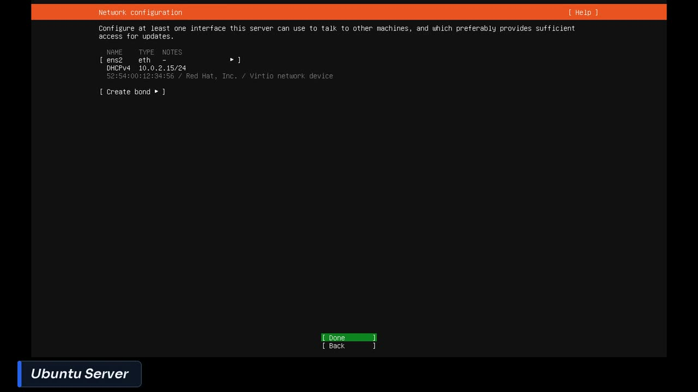
Ubuntu Server.
Rede
A rede. O instalador encontrou a placa de rede e recebeu um endereço automaticamente, por DHCP.
Num servidor de produção, convém um endereço fixo, para todos os utilizadores o encontrarem sempre no mesmo sítio. Pode configurá-lo aqui, na placa de rede, ou pedir ao serviço de informática uma reserva no DHCP. No laboratório, fica como está.
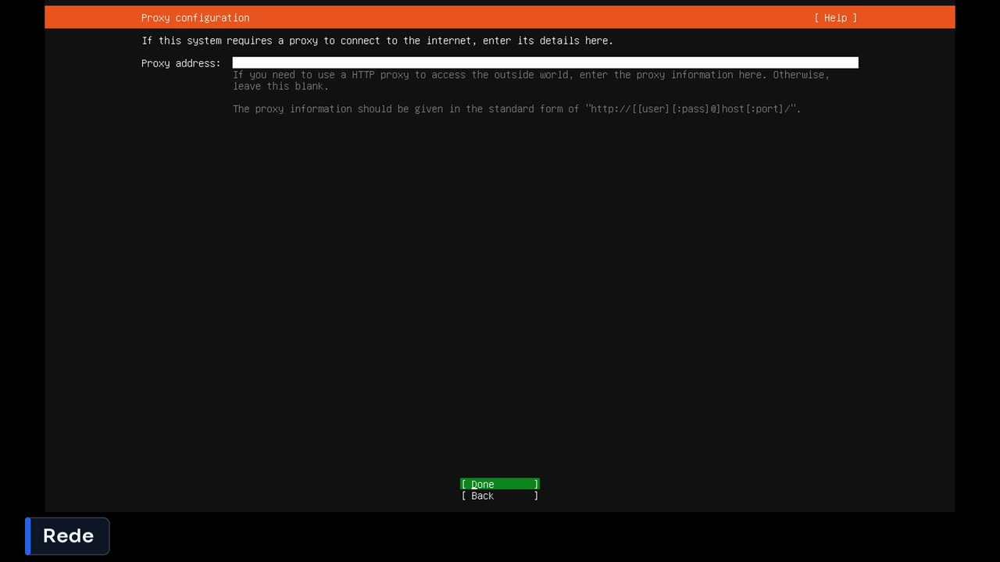
Rede.
Se a rede da organização obrigar a usar um proxy para chegar à internet, é aqui que se indica. Não é o caso.
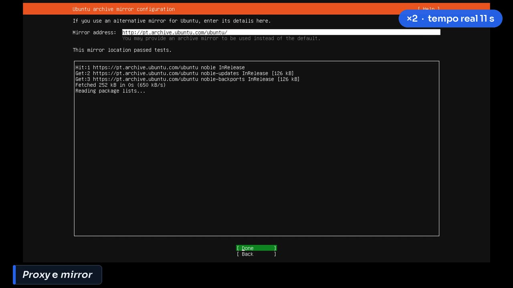
Proxy e mirror.
O mirror é o servidor de onde vêm os pacotes e as atualizações. O instalador escolheu o português e testou-o: passed tests, passou nos testes.
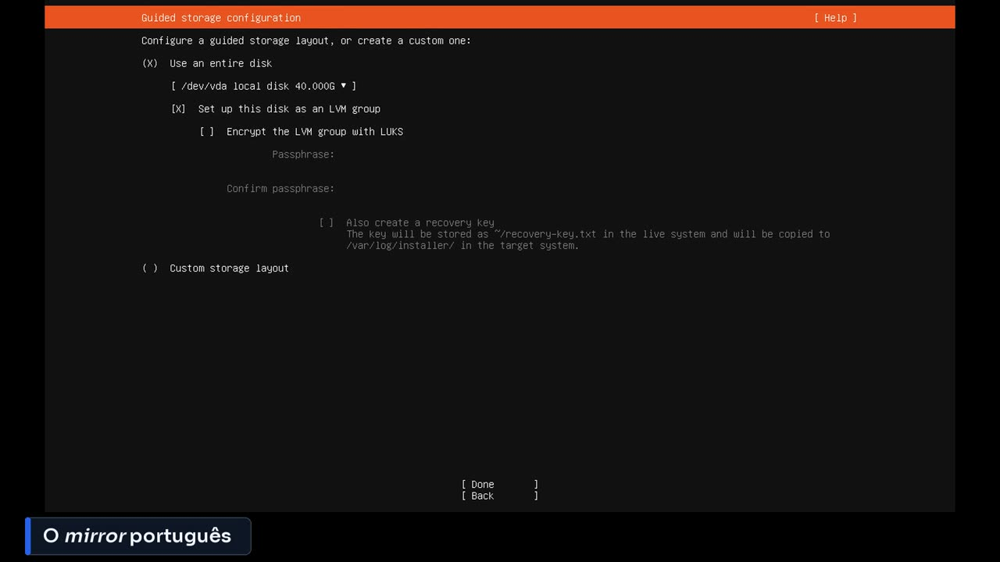
O mirror português.
Discos
Os discos. Usamos o disco inteiro, organizado com LVM — uma camada que permite, mais tarde, aumentar o espaço sem reinstalar. É a opção que já vem marcada.
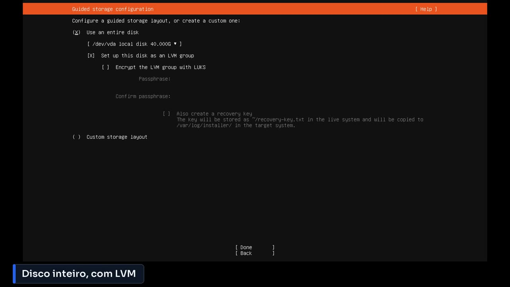
Disco inteiro, com LVM.
Repare no resumo: o sistema, a barra, fica só com dezanove gigabytes, e os outros dezanove ficam livres. É assim por omissão no Ubuntu.
Para o SecVision, com as imagens dos contentores, as evidências e as cópias de segurança, queremos o espaço todo. Por isso editamos o volume ubuntu-lv.
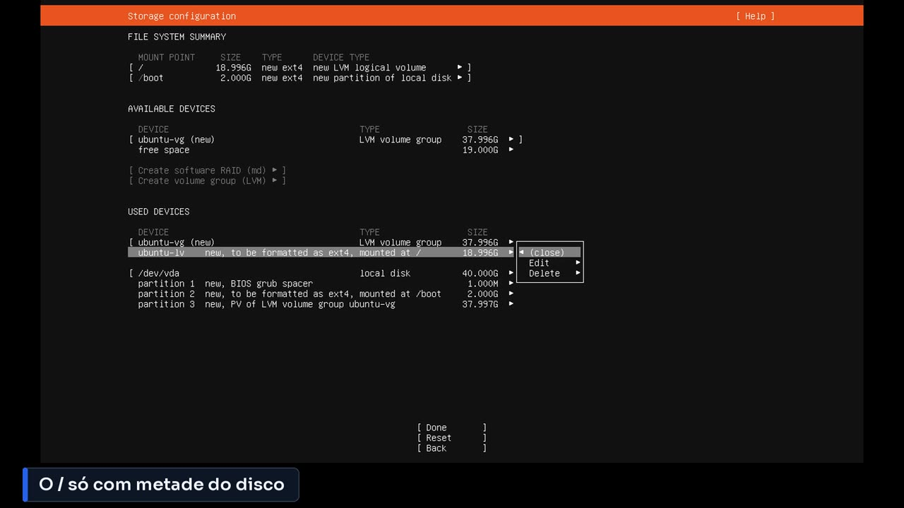
O / só com metade do disco.
No campo do tamanho, apagamos o valor e escrevemos o máximo que o instalador indica entre parênteses. Save, para guardar.
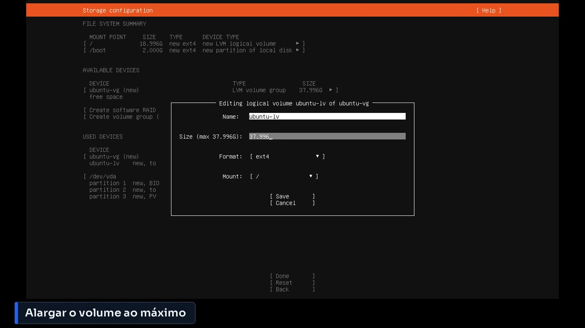
Alargar o volume ao máximo.
Agora a barra tem o espaço todo. Done, e o instalador avisa: o que estiver no disco vai ser apagado. Confirmamos com Continue.
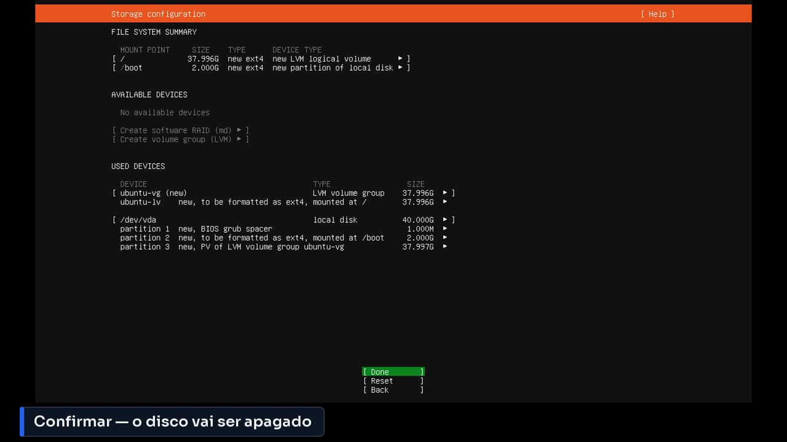
Confirmar — o disco vai ser apagado.
Utilizador e acesso
O perfil. O nosso nome, o nome do servidor — secvision, é por ele que a máquina se apresenta na rede —, o nome do utilizador, secv, e a palavra-passe, duas vezes.
Este utilizador vai ter permissão de sudo. Escolha uma palavra-passe forte e guarde-a num cofre de palavras-passe: é a chave do servidor.
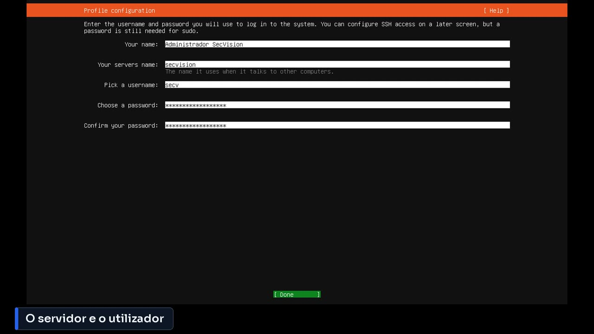
O servidor e o utilizador.
O Ubuntu Pro é uma subscrição opcional da Canonical. Saltamos, com Skip for now: pode ativar-se mais tarde.
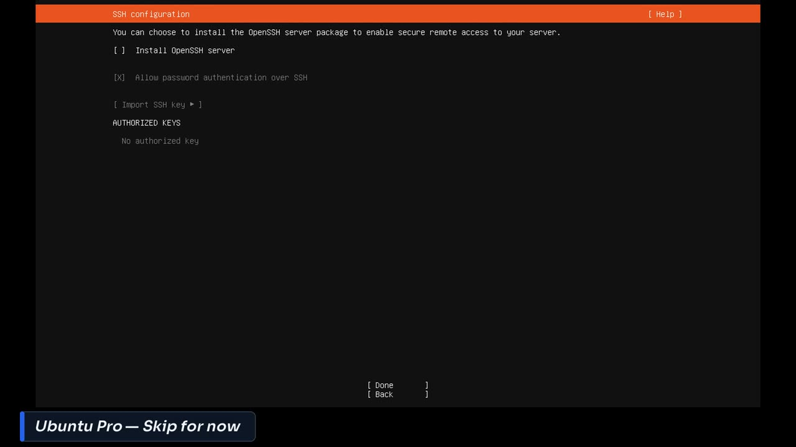
Ubuntu Pro — Skip for now.
Este é importante: marcamos Install OpenSSH server, com a barra de espaços. É o que permite administrar o servidor a partir do nosso computador, sem estar à frente dele.
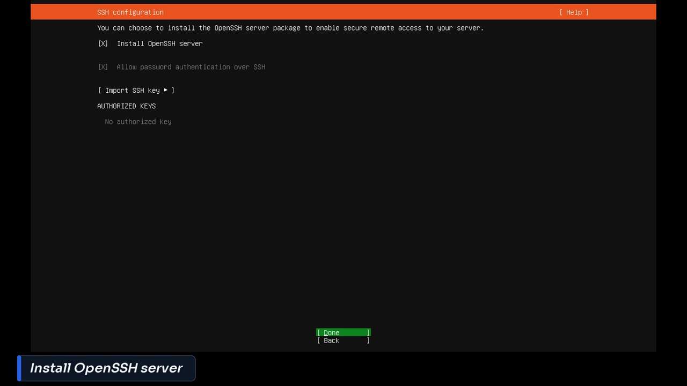
Install OpenSSH server.
A lista de snaps fica toda por marcar.
Em particular, não instale o Docker por aqui: o instalador do SecVision põe a versão aprovada, do repositório oficial, e uma segunda instalação só iria atrapalhar.
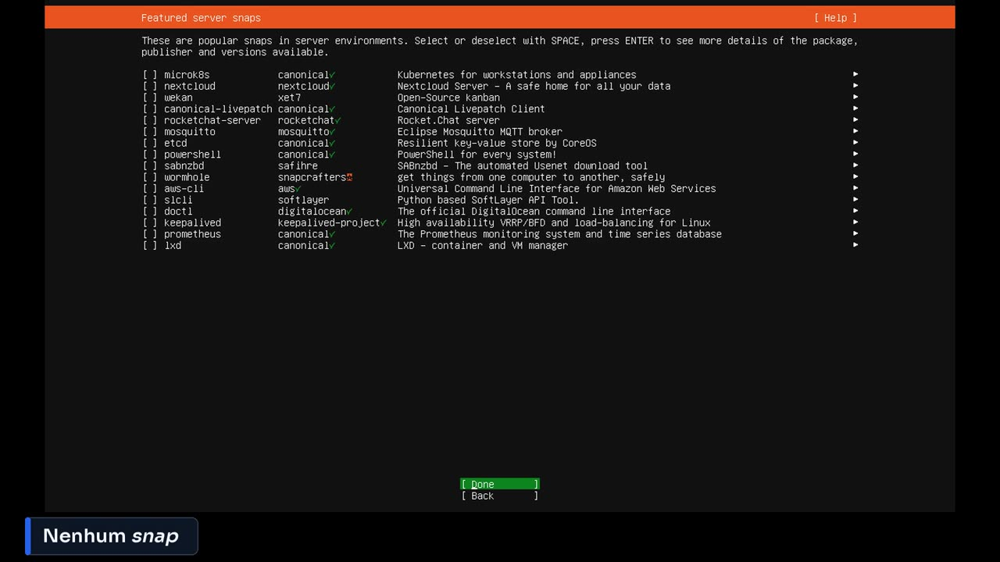
Nenhum snap.
A instalação
Começa a instalação. O instalador prepara os discos, copia o sistema, instala o arranque e o servidor SSH, e descarrega as atualizações de segurança que já saíram.
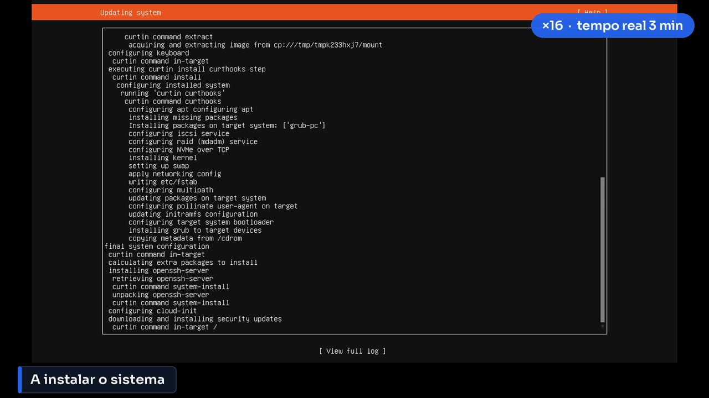
A instalar o sistema.
Installation complete. Escolhemos Reboot Now, para reiniciar já no sistema instalado.
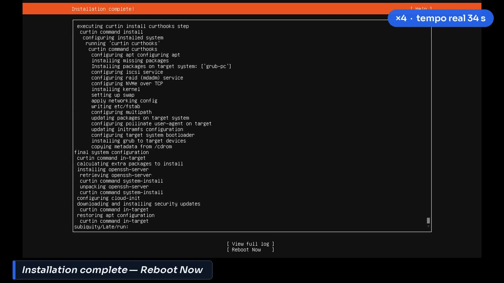
Installation complete — Reboot Now.
O instalador pede para retirar o suporte de instalação — a pen, ou o ISO da máquina virtual — e carregar em Enter.
As linhas a vermelho, FAILED, são normais neste momento: o sistema tenta desmontar a imagem que está precisamente a ser retirada.
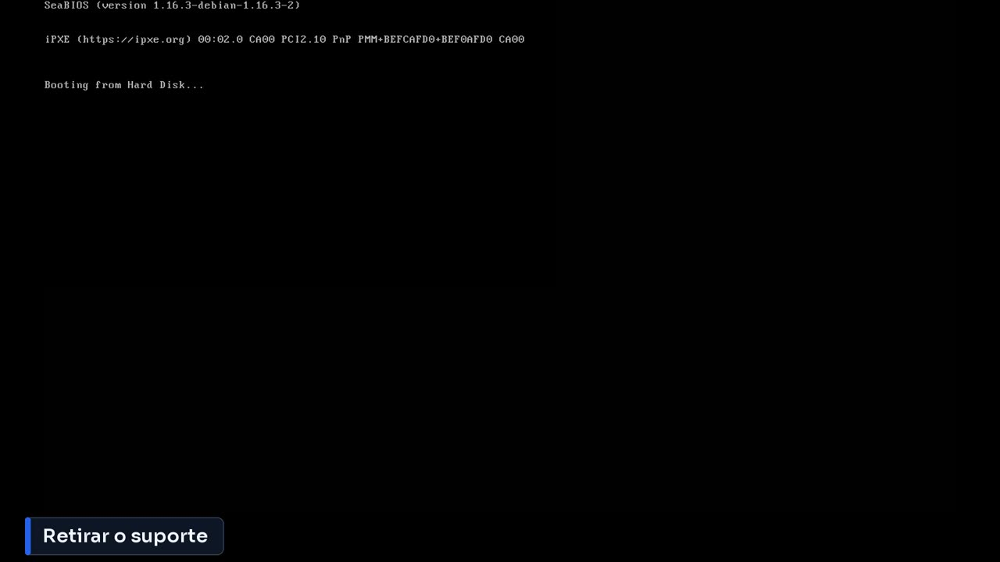
Retirar o suporte.
Primeiro arranque
O servidor arranca pela primeira vez do disco, e acaba no pedido de login: secvision login.
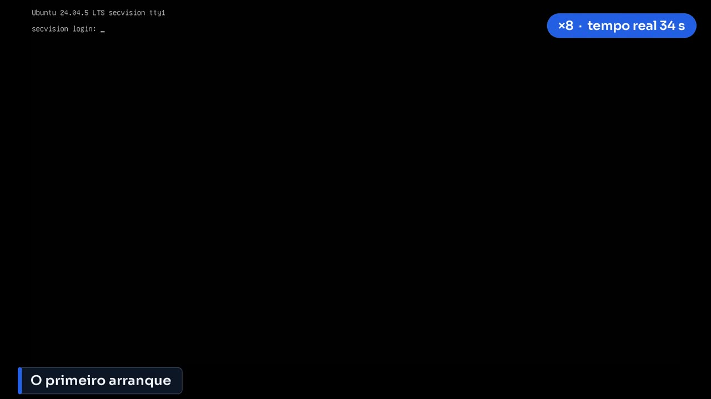
O primeiro arranque.
Entramos com o utilizador secv e a palavra-passe. Como no terminal do Windows, a palavra-passe não aparece enquanto se escreve.
Primeiro login.
Três verificações. O ip mostra o endereço do servidor na rede — é o que vai usar para chegar a ele. O df mostra a barra com os trinta e oito gigabytes que lhe demos.
E o fuso horário: o servidor vem em UTC. Mudamo-lo para Lisboa com o timedatectl, para que as datas e as horas no SecVision batam certo com as nossas.
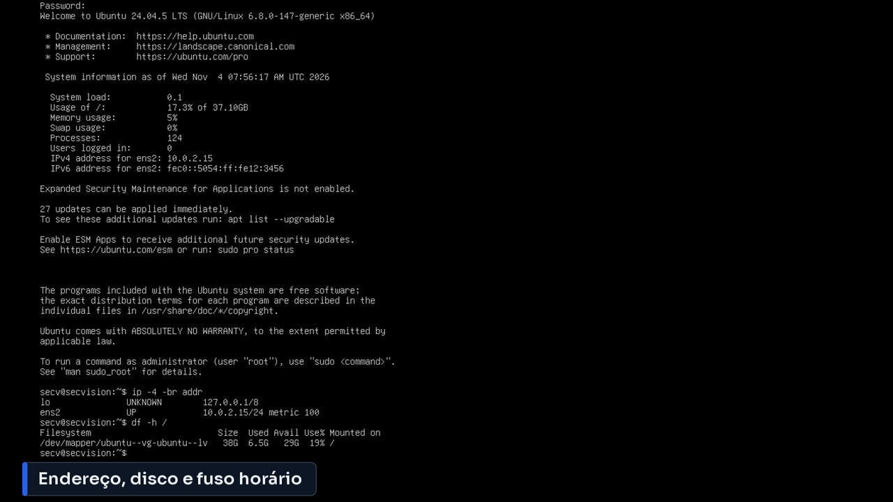
Endereço, disco e fuso horário.
Por fim, pomos o sistema em dia: sudo apt update, para saber o que há de novo, e full-upgrade, para instalar tudo. É uma boa prática antes de instalar qualquer aplicação num servidor novo.
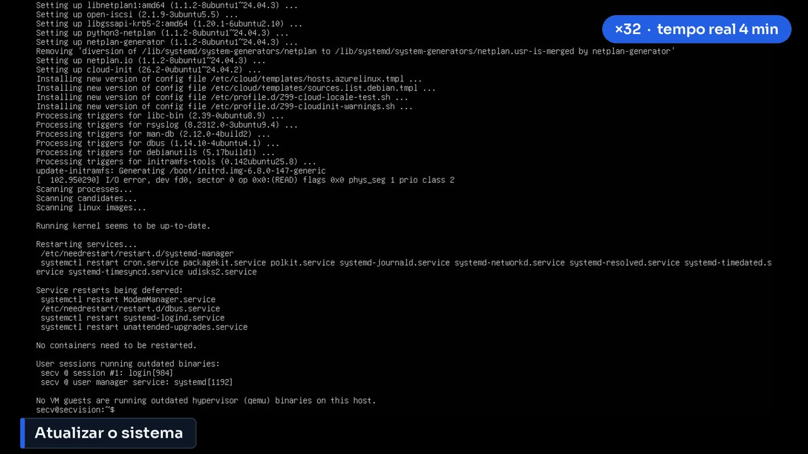
Atualizar o sistema.
O servidor está instalado, atualizado e acessível por SSH.
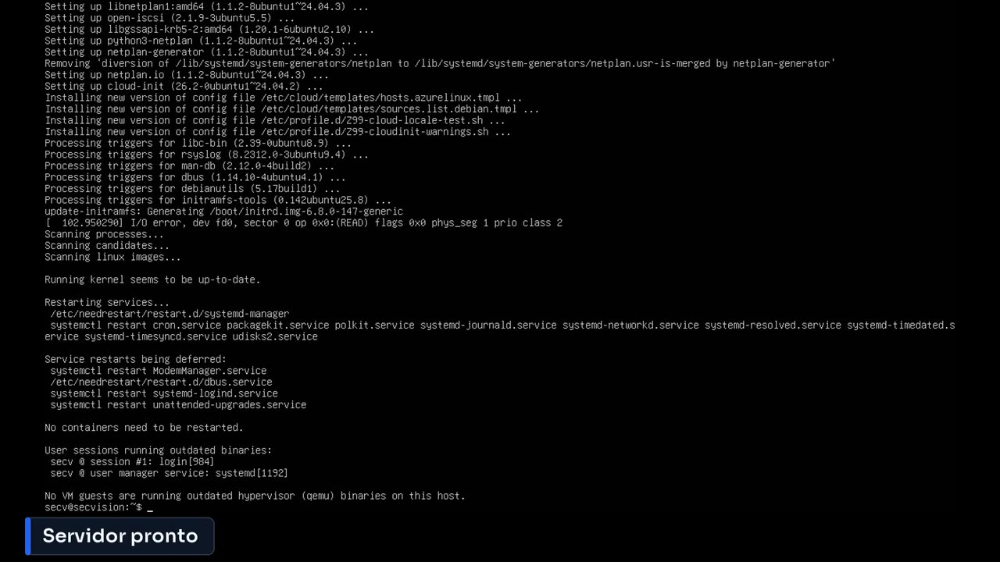
Servidor pronto.
Resumo
A partir daqui, já não é preciso estar à frente do servidor. No Windows, abre-se o PowerShell e escreve-se ssh, o utilizador, uma arroba, e o endereço do servidor. Os comandos das próximas páginas escrevem-se nessa sessão.
A partir daqui, pelo SSH
No Windows, abre-se o PowerShell e escreve-se: ssh secv@ seguido do endereço do servidor.
Os comandos das próximas páginas escrevem-se nessa sessão, como se estivéssemos à frente do servidor.
Guarde o endereço, o utilizador e a palavra-passe: vão ser precisos sempre que mexer no servidor.